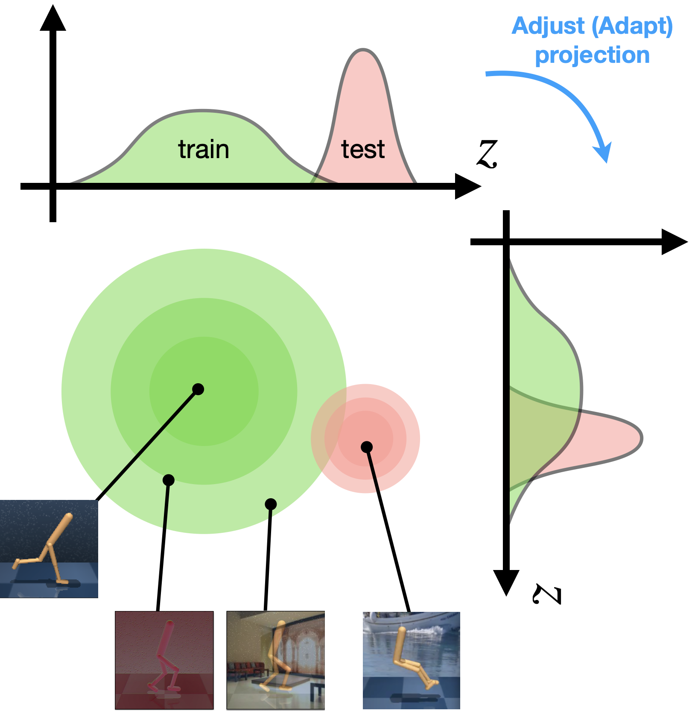
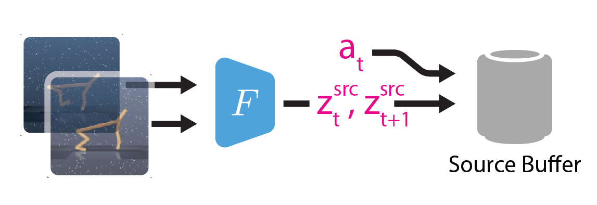
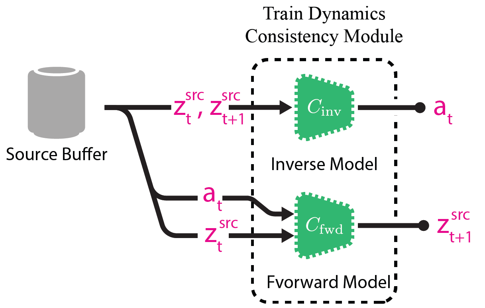
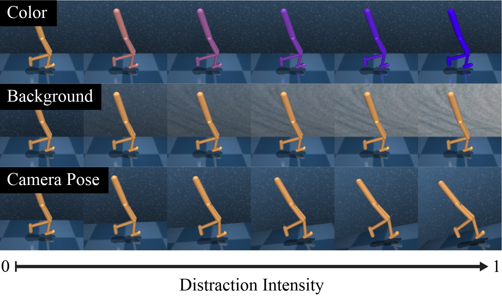
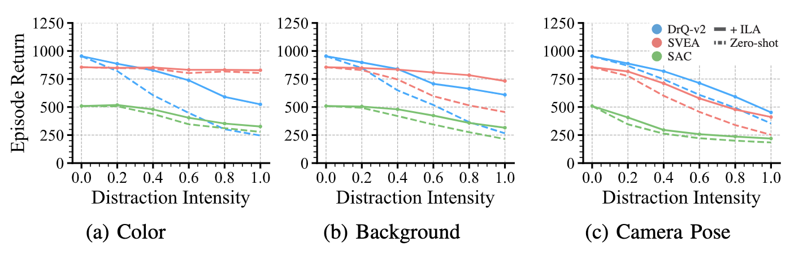
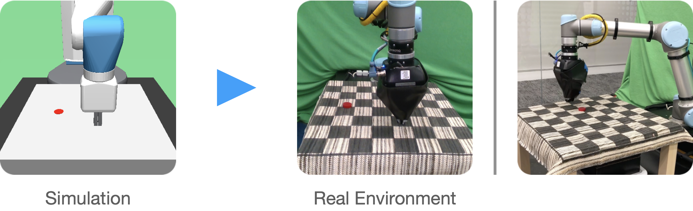

Invariance Through Latent Alignment
Takuma Yoneda,*1 Ge Yang,*2, 3 Matthew Walter,1 Bradly Stadie1
1TTI-Chicago, 2MIT CSAIL, 3IAIFI
* Equal contribution
CODE|PAPER
Overview
Invariance Through Latent Alignment (ILA) is a self-supervised adaptation method for a Reinforcement Learning agent. ILA adapts the encoder of an agent to a target domain without access to reward.
Abstract
A robot's deployment environment often involves perceptual changes that differ from what it has experienced during training. Standard practices such as data augmentation attempt to bridge this gap by augmenting source images in an effort to extend the support of the training distribution to better cover what the agent might experience at test time. In many cases, however, it is impossible to know test-time distribution-shift a priori, making these schemes infeasible. In this paper, we introduce a general approach, called Invariance Through Latent Alignment (ILA), that improves the test-time performance of a visuomotor control policy in deployment environments with unknown perceptual variations. ILA performs unsupervised adaptation at deployment-time by matching the distribution of latent features on the target domain to the agent's prior experience, without relying on paired data. Although simple, we show that this idea leads to surprising improvements on a variety of challenging adaptation scenarios, including changes in lighting conditions, the content in the scene, and camera poses. We present results on calibrated control benchmarks in simulation --the distractor control suite-- and a physical robot under a sim-to-real setup.
Motivation
Pixel-based RL agents are known to be brittle against distractions, due to its large shift in observation space. A typical approach to this issue is to apply data augmentation. This corresponds to expanding the support of the training distribution, as shown in the green circle below.
Training with augmented observations makes the agent more robust against distractions, however, as the target distribution (the pink circle below) goes far away from training, more and more augmentations becomes necessary, which becomes infeasible at some point. 
When we have some knowledge of the target (test) domain, a better approach would be domain adaptation that adapt the agent to the target (test) domain. In this paper, we assume the target domain is accessible except for its reward, and propose Invariance through Latent Alignment (ILA) that performs self-supervised domain adaptation. Specifically, ILA adapts an observation encoder so that the pretrained downstream policy \(\pi(a|z)\) can transfer to the target domain without modification.
We consider that it is the large distribution shift in the latent space that causes a poor performance in the target domain. Our approach attempts to undo this shift, by adapting the encoder based on two objectives: distribution matching and dynamics consistency.
Method
We deploy a random policy in the source domain, and encode each observation with pretrained encoder. The encoded observations and actions are stored into source buffer. 
Succeedingly, we pretrain dynamics networks \(C_\text{fwd}\) and \(C_\text{inv}\) using samples from the buffer. These models learn forward and inverse dynamics (i.e., \(\hat{z}_{t+1} = C_\text{fwd}(z_t, a_t)\), \(\hat{a}_t = C_\text{inv}(z_t, z_{t+1})\)). We can think of this step as implicitly encoding the latent transition structure of the source domain into the weights of these networks. 
Once the agent faces the target domain, we use sample transitions from source and target buffer, and adapt encoder \(F\) (intialized to the pretrained weights) and discriminator \(D\) (initialized randomly). * You can download the static version here
{kind=link}
Experiments
To experiment our adaptation scheme on various type of target domains, we deployed our agents in DeepMind Control suite. Especially, we employed a modified version of DistractCS that provides color, camera, and background distractions to DeepMind Control suite. 
The plot below shows the performance of agents against distraction intensities.
DrQ-v2 and SVEA are extensions of SAC that incorporates data augmentation.
All of the methods are first trained in source domain (i.e., standard, non-distracting domain), and then directly deployed in taget domain (zero-shot).
Dashed lines represent zero-shot performances, and solid lines represent their performance after adaptation with ILA.
Each point in this figure is computed from 9 domains and 5 random seeds.

Here is the domain-wise breakdown of background distraction with intensity \(1.0\).

Sim-to-real
We trained a SVEA agent on a reach task with a simulated Fetch robot, and then deployed the policy on a UR5 robot in the real world.

We find that the zero-shot policy keeps producing the same action regardless of the given observation. In contrast, the policy adapted with ILA shows the ability to consistently reach the goal state. Crucially, our adaptation only requires unpaired trajectories in both domains (simulation and real). What’s more, it does not need access to reward in the target (real) environment.
* The video is played in 20x speed.
BibTex
@misc{yoneda2021invariance,
title={Invariance Through Latent Alignment},
author={Takuma Yoneda and Ge Yang and Matthew R. Walter and Bradly Stadie},
year={2021},
eprint={2112.08526},
archivePrefix={arXiv},
primaryClass={cs.LG}
}